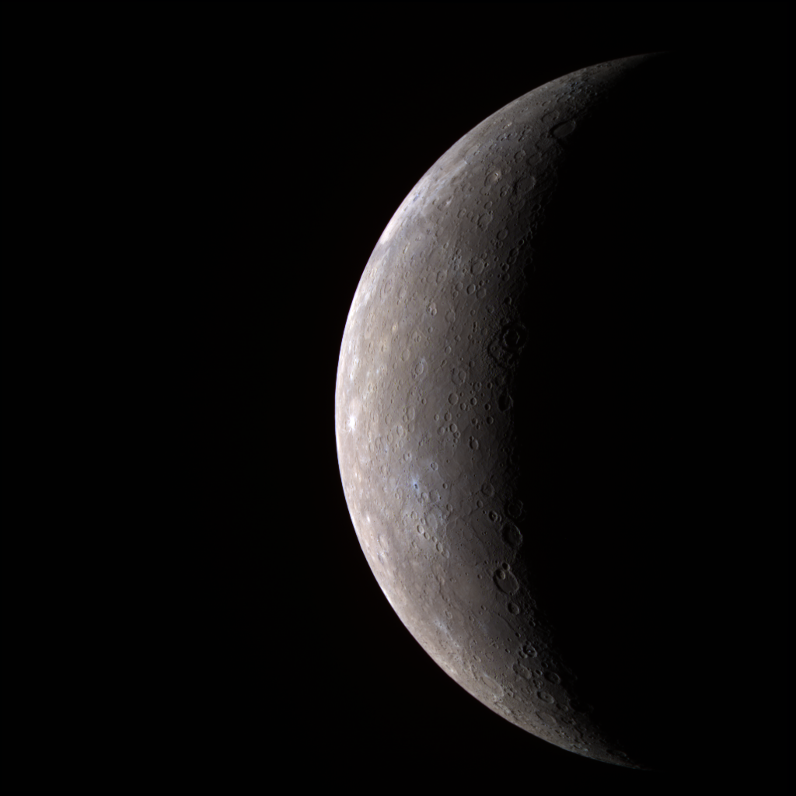

Where music meets science
SOUND: ON
| Main | Biography | Research | Credits |
|---|
Mercury:
I’m tiny.
But I’m not the tiniest. Pluto is the tiniest amongst us Milky Way siblings.
But I heard Pluto was kicked out
of the family because he was too small and too far away.
Well, I think Pluto is ohana and ohana means family and family mean no one gets
left behind or forgotten. But Planet 3627-7 inhabitants say otherwise.
Well, I have never crossed paths with Pluto, so I guess they must be right. It's still a pity though.
I’m hot. But I’m not the hottest.
My next door neighbors are hotter than me.
Venus, my sister, likes to keep the heat to herself.
Sun, my roommate, is literally a star. Sun and I usually go for walks in circles,
although I mostly do the walking and spinning while Sun just stays on her seat.
Everyone else walks at a slower pace, but I guess it’s because they’re not as close to Sun as I am.
Well, our friendship is kind of inclusive, so only a select few are within our orbit.
Why is it that my other brothers and sisters get to have visitors that come through the door while only
I have visitors that stay at a distance and just take pictures?
I thought MESSENGER would at least stay for tea, but he only took a few photos and then died on my doorstep,
leaving a 16 meter crack on my pretty surface. The audacity!
And sun, my roommate! Goodness, sometimes when she's mad,
she throws a tantrum and hits me with her waves solar winds,
stripping away my atmosphere and stealing my breath away.
Sometimes I cry about my appearance. I’m gray and wrinkly and dead.
There’s nothing interesting about me and I have no moons to speak of.
I might as well be a moon myself, as Planet 3627-7’s moon looks a lot like me.
Venus says my wrinkles look like interweaving constellations.
I think she’s just trying to be nice, but it’s the thought that counts.
Mercury is currently the smallest planet in the solar system.
Its close proximity to the sun makes it more sensitive to any solar activity, so much so that we can study the effects of our aging sun through the planet.
It orbits around the sun blazingly fast, at the speed of around 87.97 Earth days, but on the contrary, it rotates so slow, only 3 times every 2 mercury years,
that astronomers once thought that it was tidally locked with the sun. But a slow rotation is nonetheless a slow rotation, and it has resulted in the planet having
wildly different temperatures at all times.
The side facing the sun can get as hot as 427 degrees celsius, whereas the night side can get as low as -180 degrees.
The reason for this being the strong solar radiation constantly strips away Mercury's atmosphere. Without a sufficiently thick atmosphere,
the planet is unable to dissipate heat to the other side
of the planet and thus resulted in the majority of it being dissipated instead into space.

This first high-resolution image was taken by MESSENGER spacecraft in June 2008.
Credit: NASA
In my attempt to create a pseudo version of Mercury,
I have taken direct inspiration from scientific phenomena.
My goal here is to have my music function similar to a photo, as opposed to the story-book type of composition that
I have used for my other pieces in this project. Instead of colored pixels, I have used sounds to paint out the still-frame of Mercury;
combining low synth hum with sampled sounds of the violins we get something that is both bright and dark at the same time, which I have used to
represent the sun; and some high pitched, and distorted sounds for the stripping away of Mercury's atmosphere, for example. These are only two of
many sonic representations I have done for this piece, to learn more about what happens, and has happened on Mercury, you can tap on the bold text
on the left for more details.
False color image from MESSENGER showing difference in Elevation.
Credit: NASA/Johns Hopkins University Applied Physics Laboratory/Carnegie Institution of Washington
Mercury is not only small but is shrinking as well as the planet cools down. It is now 14 kilometers smaller in diameter than it was 4 billion years ago.
Mercury is not the only planet losing its heat over billions of years, in fact, every celestial object is, from the sun to the farthest planet in our solar system,
but Mercury seems to be the one affected the most, due to its core accounting for over 60% of its mass. In comparison, Earth's core is only 15% of its volume.
This shrinking of Mercury over millions of years has given rise to ridges and escarpments alongside its marks from asteroid impacts.
To the left is a alse color image taken by MESSENGER spacecraft. It reveals ridges, escarpments, and craters through
colors, with blue being low and yellow/green showing higher elevations.
 The reclassification was due to Pluto failing to meet the third criterion of the International Astronomical Union. The third criterion
states that it must have cleared its neighboring region of other objects -- to put simply, there must not be any other objects
sharing its orbit. It is now holding the status of a dwarf planet, along with several others such as Makemake, Ceres, Eris, Haumea, etc.
Most of which resides beyond the orbit of Neptune, with some being in the Kuiper Belt.
The reclassification was due to Pluto failing to meet the third criterion of the International Astronomical Union. The third criterion
states that it must have cleared its neighboring region of other objects -- to put simply, there must not be any other objects
sharing its orbit. It is now holding the status of a dwarf planet, along with several others such as Makemake, Ceres, Eris, Haumea, etc.
Most of which resides beyond the orbit of Neptune, with some being in the Kuiper Belt.
Had Mercury been allowed a thicker atmosphere, the planet's temperature would soar past that of venus and snatch the title of the hottest
object in the solar system besides the sun.
Currently, it's already thin atmosphere is being stripped away from the strong solar wind of the sun.
With a very weak magnetic field and it's unfortunate positioning, the planet has no possible way of mitigating the effect of the solar phenomenon.
"If an object A exerts a force on object B, then object B must exert a force of equal magnitude and opposite direction back on object A."
According to Newton's third law, every planet orbits its stars, or every satellite its planet, exert an equivalent amount of
pull in its own direction; the smaller the mass, the smaller the pull. This tug of war causes both objects to orbit around a center of mass.
Between a small object such as Mercury and the sun, the effect is more difficult to detect, but it is there. In fact, this minuscule wobble in a star causes a doppler effect, and it is one of the methods scientists use
to detect exoplanets thousands of light
-years away.
Doppler effect is a phenomenon whereby the frequency of a wave is changed in relation to an observer; namely, during the dance between
a star and its planet, as the star wobble closer to us (observer), the light wave gets squished, and as it moves farther, the wave gets
more spaced out. We can detect this wobble through the shift in the spectrum of light and a plethora of exoplanets have been discovered through
this method.
Doppler effect is how RADAR detects the speed of an object combining the shift in the received signal and the interval between the send and receive.
This effect is also responsible for the shift in the sound of siren's and race cars as they move closer and away from an observer.
The size of Mercury's iron core hinted at first glance, that it should possess an Earth-like level of magnetic field. However,
the strength of its magnetosphere is only 1.1% that of the Earth's. Also, instead of having a stable atmosphere like we do.
Mercury has
a relatively thin exosphere that is constantly being taken away by strong solar winds. Luckily, it is constantly replaced by dust kicked up from extreme activities,
such as meteor strikes or from particles//dust that are sent off into space by the solar winds themselves, as part of them innevitably hit the
surface of the planet. Mercury's magnetosphere, though significantly weaker than ours, is strong enough to deflect most of the solar winds,
allowing it to replenish and retain, though unstable, its exosphere.
2d graphic showing a Mercury's magnetic field based on data from MESSENGER.
Credit: Courtesy of Science/AAAS
So far, only two spacecraft have visited Mercury, the Mariner 10 in the seventies, and a much more recent visit from MESSENGER in 2008.
The current detailed photographic mapping and data that we have of Mercury was taken and collected by MESSENGER during its three flybys.
The spacecraft became the first to have entered Mercury's orbit in 2011.
Similar to Cassini's death, MESSENGER used its last propellant to deorbit itself and crash into the planet.
The last farewell photo from the spacecraft was a photo of a flat plain, a then crater after MESSENGER's crash.
Last photo transmitted by Mercury, minutes before its impact.
Credit: NASA
On the outside, Mercury might look just like our moon, dead and lifeless. But MESSENGER's mission has revealed the contrary.
Mercury is NOTHING like the moon, it might be much less active than it was when it was younger. We know that it has, weak though it is, a
magnetic field. And false color image has revealed that its mineralogy of the planet is also vastly different from our satellite. We can
leverage these findings to help us answer questions about how rocky planets such as Earth and Mercury evolve overtime.
Mosaic of the entire planet's mapping, with false color showing hidden geological information.
Credit: NASA/Johns Hopkins University Applied Physics Laboratory/Carnegie Institution of Washington
Venus:
Her amber beauty is a deception, an alluring neighbor that can be seen in the night sky with the naked eye.
One is reminded not to approach her as a single touch can burn.
Her skin bleeds molten fire and she cries of acid that evaporates within seconds in her atmosphere.
As Planet 3627-7 says good night, Venus rises and says good morning, her day passing in slow motion until she goes to sleep on the 243rd morning of Planet 3627-7.
ENGINE MALFUNCTION
The words flash red on the screen, jumping around a few times and settling again. The multiple monitors' glitch as the system starts to fry. Alarms blaze scarlet in multiple pulses as the two astronauts bustle around, trying to fix the source of the damage.
“Are you getting this?” Charles Smith says as he presses on a combination of codes, hoping something – anything will work.
“The right side engine isn’t working. Any second now, we’re gonna drop if we lose control.”
“How about the steering system and power subsystem?” Werner Holt asks as he pulls out a toolbox from a cabinet.
“Communications?”
Charles Smith presses his ear on the headset, but all he gets is white noise.
“I can’t reach them. The heat from the atmosphere must’ve damaged the service module. Nothing is working.”
“Try to check on the propulsion system. If it’s still working, we might be able to at least escape its gravity.”
Werner Holt grits his teeth as he proceeds to pull out a panel from underneath the switchboard, revealing hundreds of wires. Crawling inside,
he grips the penlight between his teeth as he begins to fiddle with the wires.
“Bad news. The left engine is damaged. It must’ve been from the meteorite that crashed into us a
while ago. The right engine is overworked, we're losing our ticket out!” Charles Smith looks out the window and at the looming planet.
Sweat trickles down his temple. The room feels hot.
“Uhh, Werner? We’re starting to fall.”
Incoherent words spill out from Werner Holt’s mouth, but Charles Smith got the gist that they weren’t such pleasant words.
Creak!
A chunk of metal ripped out and disappear into the thick, sulfuric atmosphere, Both of them froze.
“There goes our external tank.” Charles says quietly, a sense of dread washing over him. He rushes to the somewhat working monitors.
“Atmospheric pressure and temperature are rising. Looks like the Orbiter Passive Control System was also damaged in the crash.”
Orbiter PVD System down
Altitude and Orbit Control down
Data Relay offline
Avionics System failure imminent
EMERGENCY PARACHUTE DEPLOYED
The spacecraft jolts as the parachute gains lift, only for the fabric to be torn from the craft by the brutal force of the winds and the scorching healt of the air. The spacecraft whirls around, metal glowing as it starts to fall into the toxic atmosphere.
“Werner! We’ve lost control!”
“Almost got it-”
“Werner!”
CRASH!
A fiery cloud billows, blossoming like a flower of death. Within minutes, the fire had consumed the Venera 48 – spacecraft, titanium, humans, and all.
Venus does not receive visitors from her next-door neighbors.
She deems it is due to her unwelcoming doorstep; as the crafts Planet 3627-7 have sent seem to burn up after a short period of time. Pity.
"Hell, real hell."
Mikhail Marov - A Traveler's Guide to the Planets
Do not let the name Venus trick you. There is no greater discrepancy between one thing and its name.
This planet is nothing like the goddess of love, it is -- with no exaggerations -- hell.
Venus was the first planet to have ever received a probe from Earth, however, it was always a brief knock on the door.
With its thick sulfuric atmosphere, its crushing pressure, and its melting temperature, a trip to Venus is guaranteed to be unpleasant and short.
 Composited images of Venus using data obtained by the Mariner 10.
Composited images of Venus using data obtained by the Mariner 10.
Credit: NASA/JPL
The writer of the story and I worked together to come up with the appropriate direction, for both the music and the story,
to somehow describe the diabolical elements of Venus in an interesting and convincing manner.
Our conclusion was that a short piece of a novel with accurate details regarding the planet, with the music as its musical score.
Science fiction has always been a huge part of our culture and it'd be a shame for me to not pay homage to that at least once in this interdisciplinary project.
We have photographs of the actual surface of the planet and we know that her surface is red-brown in color.
The main contributor to the color of any planet's hue is, however, its atmospheric content. Venus's atmosphere comprises
mainly of sulfuric acid and its clouds reflect and scatter sunlight, giving it its whittish-orange coloration.
 A picture of Venus taken through a blue filter by the Galileo spacecraft.
A picture of Venus taken through a blue filter by the Galileo spacecraft.
Credit: NASA/JPL
Looking at the color of a planet from a photo can also be misleading, as some photos are taken through different filters to obtain
different data, giving false impressions to the public's eyes. The left photo of Venus was taken through a blue filter to
emphasize the contrasts in the cloud markings, for example.
Venus is the brightest planet in the night sky and can be easily spotted with the naked eye.
It is called morning star sometimes due to its position in the sky being quite close to the sun,
both at dusk and dawn.
Planets in our solar system appear brighter than stars millions of kilometers
away thanks to them being much closer to our world, giving the reflected sunlight, a direct path to Earth. How bright
the reflected light is depends on how much it is absorbed. The sulfuric acid in Venus's atmosphere is very reflective, granting it
the title of the brightest planet in the night sky.
Due to Venus' thick cloud and crushing atmosphere, our only practical method for surface mapping
was through radar. Through the mapped data we see that most of the surface is covered by volcanic
features indicating the major roles of volcanism in shaping Venus' surface. Despite most of its 1600
major volcanos being extinct, the temperature on the surface of Venus is still a lead-melting 467 C,
thanks to its runaway greenhouse effect.
However, whether Venus is still a volcanically active planet or not remains a hot debate
in the field of astronomy as most of the data are from long-range measurements.
Sending probes are out of the question and they would not last even an hour under the pressure and the heat.
Interactable 3D model of Venus.
Credit: NASA/JPL
Other than spinning backwards, this planet also spins very very slowly.
Scientists do not know with absolute certainty why but the possibilities are
that Venus might have been hit once in the past by an object so last its entire
orbit slowed down to a crawl and began to spin backwards.
Another
less dramatic theory is that it is from the state of tidal locking with the sun.
Similar to the perfect and almost 1:1 spin-orbit ratio of Earth-Moon and Sun-Mercury,
by being almost tidally locked with the orbited object, the spin rate of the orbiter will slow down dramatically.
 An illustration showing the spin direction and tilt of all planets in the solar system.
An illustration showing the spin direction and tilt of all planets in the solar system.
Credit: Astronoo
Venus is a great study case for the impact of the greenhouse effect on our world.
We can see how severe the effect of heat-trapping of the CO2 can be. Even though Venus
is not the closest planet to the sun, its ability to retain heat more than makes up for
its distance. The heat of more than 400 C on Venus is hot enough to melt Lead.
Any spacecraft not properly insulated or with its insulation compromised will most
likely have their electronics fried within seconds of entering its atmosphere.
A digital camera after being exposed to Venus surface temperature for a few seconds.
Credit: Space and asFtronomy
 Tangent is always at right-angle to the radius.
Tangent is always at right-angle to the radius.
Credit: Fiona Vincent
In order for any orbiting object to remain in orbit of the orbited, its relative perpendicular
velocity must be enough such that it falls in a "circular manner". To put in mathematically,
the gravity acts as a pull in the y-direction(sin), and the object's perpendicular velocity is
x-direction(cos). When this happens, the object will travel in the tangent direction to the path of the body.
This is why we often see spacecraft that loses its speed in sci-fi films around a planet often gets pulled by the planet's gravity;
when the change in x-direction stops, the only thing left will be just a y pull, aka "falling".
The Venera program was a program that focused mainly on sending probes to Venus, developed by the Soviet Union between 1961 and 1984. Venera 3, the third of its line was the first
man-made object to enter and crash into another planet, as its equipment was damaged badly after entering the deadly Venusian atmosphere.
Venera 7 to Venera 14 were able to land on the surface of the planet and transmit data back for a short period of time before malfunctioning. The photo sent back by the
Venera 9 below was the first-ever image of another planet.
Black and white panoramic view of the Venusian surface. Taken by Venera 9.
Credit: Roscosmos
The crafts sent into the Venusian atmosphere lasted no more than 2 hours at most.
Earth: There is a saying shared across the universe.
Planet 3627-7 is a special world. It is a liquid world that fills up three-fourths of its mass with water, yet sustains billions of species of creatures. Its
residents
live on the tallest peaks of the coldest mountains,
to the hottest plains of its barren deserts,
and into the depths of its oceans.
It is a world filled with an array of color unlike any other planet in its solar system.
The firmament protects it from the radiation of the sun.
Frozen water fall from the sky like fine white dust for a quarter of a cycle.
It is filled with these things called trees that release gases that sustain life in its atmosphere, and that it is a world filled with creatures as
tall as the trees and as small as the pebbles on the ground.
It is said that the world’s rulers, creatures called humans, are the oddest of all.
They live with plants and beasts that can kill them, but they have dominion above them all.
They breathe in gases that burn them slowly inside at the rate of about 80 cycles around the sun.
They have created settlements where temperatures dip to as low as -90 degrees and as high as 50 degrees and still reproduce.
They capture the wind in the sails of their contraptions and journey across the waters.
They then take the wind as their own and fly above the sky, defying their planet’s own gravity.
The sun’s solar winds hit its atmosphere but instead of fearing it, they stare in awe at the lights they have named
Aurora Borealis.
As daylight in the night, these northern lights weaved amongst the silver clouds in a hypnotic dance, distorting in an array of
green and purple with tongues of reds and oranges flickering in between.
But they were not satisfied with the sky. These humans decided to venture out of their world and into outer space,
touching upon their moon and sending their metal creature into the depths of the universe, seeking others
like them – hoping to find a connection – hopelessly lost. But the universe kept silent.
But the universe speaks of them. They speak of the terrible and marvelous things of the complex planet. The planet these humans call Earth.
“Look again at that dot. That's here. That's home. That's us. On it everyone you love, everyone you know,
everyone you ever heard of, every human being who ever was, lived out their lives........."
Carl Sagan, Pale Blue Dot: A Vision of the Human Future in Space
Earth, our home. Our only home. Our entire history is written on the surface of this minuscule blue globe. She has been taking care of us for millions
of years. Writing music for something that encapsulates so many things people can relate to is possibly one of the most challenging aspects of this
project. The way I approached this is to capture the essence of sounds we are familiar with through use of synthesizers and acoustic sounds sampling.
For example, the sound of white noise could represent a number of things, waterfall, wind, the rustling of leaves, ocean waves, etc. Of course, pure white noise
would not sound so good without proper manipulation, so, that will be part of the process as well.
The Blue Marble: image taken by the Apollo 17's crew on their way to the moon.
Credit: NASA
The use of synthesizers in this piece is to bring the sense of being similar, yet not entirely so; an aural uncanny valley. Had I used
entirely acoustic sounds, the elements of this piece would sound too familiar, people would recognize immediately where to place the
sounds in their perceived reality. What I intend for this piece is to bring the listener out of their reality and to look at Earth the same
way we look at other planets; the marvel she holds and her fragility. The writer of the story for Earth has perfectly captured the essence of
my intention in her beautifully written work on the left.
72 percent of Earth's volume is covered in liquid water, only 3% of that is drinkable water, the rest is salty ocean water, and only 30% of the drinkable water is not licked in ice caps.
During the formation of the solar system, we can see from the composition of the inner planets that water and other gaseous elements could not have possibly formed within this region, as it was far too hot
for liquid water to form. The accepted theory now is that water was delivered to Earth from icy planetesimals from the farther region of the protoplanetary disk.
 2d graphic showing a protoplanetary disk's structure.
2d graphic showing a protoplanetary disk's structure.
Credit: NASA/JPL
"Life finds a way", the famous quote from Jurassic Park cannot be more true. Wherever we look, if we look hard enough, we find life. Our current technology has allowed us to explore frontiers we didn't think possible, and oftentimes, we found ourselves staring in wonder as our own discoveries disprove our theories and hypotheses.
Mount Everest is not only famous for its height, but also for its deadly cold and low-level of oxygen.
In the face of all the adversities, we find that it still hosts an amazing animal diversity, such as the snow leopard,
Himalayan black bear, Himalayan Tahr, or even the tiniest of all, the small Himalayan jumping spider
 A wide view of the Himalayan mountain range.
A wide view of the Himalayan mountain range.
Credit: Unknown/public domain
Amidst the heat of Earth's hottest plains, we have creatures such as the Fennec fox, Bactrian camels, the famous thorny devil lizards, etc.
Despite the extreme conditions of the environments, from the face-melting heat to the water scarcity,
each animal has found its own way of adapting to the harsh and unforgiving environment that are deserts and wide expanses of dry plains.
An arid plain in Namibia where the rain evaporates before it hits the ground.
Credit: BBC
Life exists even in the depth of the sea. It is said that the deep sea contains more creatures than all of the land-dwelling ones combined.
In the depth of the ocean, with so little to no sunlight, creatures have to adopt new ways of finding food and fend for themselves.
As a result, we ended up with myriads of creatures whose appearances are beyond our imagination.
 This stunning image is from the documentary "Our Planet"
This stunning image is from the documentary "Our Planet"
Credit: Netflix
For each layer of depth, we find newer and stranger animals down to the deepest part of our ocean, the Mariana Trench.
There, where the pressure is over a fifteen-thousand psi (over a thousand elephants), we have in 2017,
discovered a species of snailfish called the Ethereal Snailfish (found in the depth of 8,076 m) lurking in the depth where
we thought the pressure was too extreme for life.
Scientists believe that the outer layer of our planet's molten core is responsible for our magnetic field, as the molten material
possesses electric charges and magnetic fields are created from the motion of moving electric charges.
 An illustration of Earth's magnetic field.
An illustration of Earth's magnetic field.
Credit: Peter Reid, The University of Edinburgh
Solar winds fly straight to Earth from the sun at the speed of roughly 400 km/s. Our planet's magnetic field deflects off the particles from the sun, with few collects
at the north and south poles, where the impact and dissipation of their energy against our atmosphere create the heavenly phenomenon known as "Aurora Borealis".
 Image taken by the Hubble Space Telescope of the Aurora around Jupiter's north pole.
Image taken by the Hubble Space Telescope of the Aurora around Jupiter's north pole.
Credit: NASA/ESA
Earth is, however, not the only planet where such an event occurs regularly in the solar system, all the other gas giants have it too, and their fields are even stronger than ours.
 Protoplanetary disk mappings around young stars by ALMA.
Protoplanetary disk mappings around young stars by ALMA.
Credit: ALMA (ESO/NAOJ/NRAO)
During the protoplanetary disk stage, the four rocky inner planets, Mercury, Venus, Earth and Mars, each acquired their own atmosphere by pulling in gas from the
disk when they grew large enough to resist the gas drag posed by the surrounding gas. To retain the gathered gas, each planet must be sufficiently large, such that
the escape velocity is greater than the speed of the gas's atom.
Earth's atmosphere came from absorbing those gases during the early stage and the ones spewing out of volcanoes. Early Earth's atmosphere was similar to Venus,
as both planets formed in relatively close proximity of each other. The breathable air that we have today is thanks to the early life forms on earth that brought in
the photosynthetic system.
This video of the Aurora Borealis was taken by the crew aboard the ISS
Credit: Crew Earth Observations Video Page
The ionization of atoms in the atmosphere after the collision between photons from the sun and our atmosphere's constituents causes the light show of varying color
and complexity.
 Mission timeline of the 2 Voyager spacecraft.
Mission timeline of the 2 Voyager spacecraft.
Credit: NASA/JPL
Launched in 1977, Voyager 1 currently holds the place for the farthest human-made object from Earth. Traveling at the speed of 17km/s the spacecraft would take about 300 more years to
reach the edge of our solar system: Oort cloud and will be in 1.7 light-years of its destination in the constellation Ophiuchus, the star AC+79 3888, in the year 40,272 AD.
Pioneer 10 and 11 spacecraft both had small metal plates loaded onto them that carried the information of their place of origin. For Voyager 1,
however, the data was a tad more ambitious. The message is carried by a gold-plated copper disk phonograph record. It contains music from various periods
, sounds from many cultures, and images showing the diversity of life on Earth.
Mars:
The year is now 34 AE (After Earth). Humanity has lost its planet and has been traveling through space in search of a new home. The AD millennia ended with entire civilizations crumbling into dust and its population annihilated to a mere quarter of 7 billion. Once a planet brimming with life, it is now a skeleton of its former glory.
Three large aircraft approach upon the red planet of Mars – once a twinkling red dot in the night sky is now a looming orb of a second home that is as unwelcoming as its barren landscape.
Touching upon the desert sand, heartbeats are loud against the whispers of the storm.
They shiver at the sight of a cold, dead vast expanse of rocks on the dusty surface. Their steps are light and they float through the air just by a brush of a footstep. As one, they venture into uncharted territory, blinded by the winds of the storm and the dust that dances across their vision.
People huddle together for comfort as they walk towards a peak that touches the scarlet skies of its toxic atmosphere. It is Olympus Mons and it rises as a beacon of shelter. There is a settlement by their predecessors and they must arrive before the setting of the sun. As they reach the foot of the mountain, they see the shadows of the very first explorers from Earth standing side by side, their solar panels glinting in the light, and there, humanity is reminded of one's own inquisitive nature.
Opportunity and Curiosity.
"Exploring and colonizing Mars can bring us new scientific understandings of the climate change,
of how planet-wide processes can make a warm and wet world into a barren landscape.
By exploring and understanding Mars, we may gain key insights into the past and future of our own world."
Let's Aim for Mars - Buzz Aldrin
Mars and Venus are situated not too far away from the goldilocks zone, which makes them perfect candidates to consider building our next home. However, Venus is a hot and tumultuous place, with temperature hotter than our baking ovens, rendering it inhospitable for any known-lifeform, leaving us our final candidate: Mars.
Mars is by itself, just a dead planet where nothing happens at all, but this planet holds many treasures within. Geological data reveals that Mars was once, like Earth. We have so far, mapped over 40,000 river valleys from Mars with some even wider than our widest river. It also has huge polar icecaps which could serve as our water reservoir in the future.
Mars' deadliest disaster is luckily for us, its 60 miles an hour wind speed. With an atmosphere as thin as Mars, such wind speed would be equivalent to the light comfy winter breeze we get here on Earth. With natural disasters out of the way, we should be able to focus on important aspects of building a self-sustained colony.
Osuga Valles, a complex set of river channels.
Credit: ESA/DLR/FU Berlin
For Mars, I intended for the soundscape to exude somewhat of an eerie, and bleak atmosphere. The accompanying story depicts a scene where
humans slowly evacuate from the dying planet Earth. As they approach the looming red planet, several thoughts pop up in their heads, from
the scarcity of resources to the vast and empty inhabitable landscape on which to become their new home, most likely until their last breath.
The musical elements are constant heartbeats, a human element, against the background of uncertain Mars elements, ranging from
the scratchy dust-wind, to the haunting cry of the far-away storm hovering in the lower atmosphere. It is a sonic juxtaposition of humans against
nature on this dead planet.
The space race to send people to Mars has never been more fierce, with
Mars needs you poster from the exhibit at the Kennedy Space Center in 2009.
Credit: NASA/KSC
private companies such as Blue Origin,
SpaceX, Boeing, etc. working closely with government space agencies around the world to plan out our species' next biggest step.
In our effort to establish the second human colony on Mars, not only do we have to solve engineering problems, but agricultural, geological, medical, psychological, and many more
aspects as well. To build a self-sustainable colony on Mars, we have to ensure that it is able to cater for itself (it would take
too long for Earth's resources to reach Mars) when it comes to resources, be it for humans or machines.
SpaceX's concept of a colony on Mars.
Credit: SpaceX
Therefore, in the not-so-far-away future,
not only will we need engineers and scientists on Mars, but teachers, gardeners, musicians, artists, construction workers, doctors; people from all
facets of life will have to work hand-in-hand to fulfill the goal of humankind becoming the true space-faring species.
It is also exciting to see what Earth could benefit from such technological advancements; how we can apply those techs to help us improve
the quality of our first home.
 Position of Mars in the night sky looking south at midnight.
Position of Mars in the night sky looking south at midnight.
Credit: Efbrazil / CC BY-SA (https://creativecommons.org/licenses/by-sa/4.0)
From massive wildfire disasters to the melting of the polar ice caps, the evidence for climate change has never been more apparent,
yet there are still some people that refuse to accept human's influence over the sudden rise of global temperature.
If we let this type of ignorance run free, eventually, habitable moons and Mars won't be there to be our second home but rather, the
one home we will have left.
In the night sky, Mars is the third brightest planet behind Jupiter and Venus. It appears as an orange-red-hued bright dot in the night sky close to Saturn, Jupiter, and the star Antares. With a good enough home telescope, we can
see very fine details on Mars, even its ice caps.
 Position of Mars in the night sky looking south at midnight.
Position of Mars in the night sky looking south at midnight.
Credit: NASA
Observed by many civilizations throughout history, Babylonians, Chinese, Egyptians, Italians, Greek, etc., with the first telescopic observation by Galileo Galilei. Humans' interest in this planet has always been nothing but strong, and even
more so when we have deduced from the centuries of information that Mars could potentially have harbored life in the past, and how similar it used to be to our own planet.
The reddish hue on Mars is a result of rusty dust suspended in the atmosphere; however, a closer inspection of the planet would reveal that the surface is more orange-red rather than the strong reddish hue depicted in many
oversaturated photos on the internet.

The rust in the atmosphere comes from the oxidized iron on the surface. The iron oxide, which is the same compound that gives blood its red color, when
interacting with oxygen, appears red as it absorbs blue and green spectrum of light.
We don't know, however, whether the rust on Mars occurred due to rainstorms in the past, when Mars was still a young and rather wet planet,
or is it a gradual process of the rocks' interaction to the Martian atmosphere over billions of years.
One of the most concerning aspects of living on Mars lies in its nothingness. On Earth, most of our agricultural activities are done outdoors; grow crops, livestock, etc. But on Mars, its surface is a true rocky desert of nothingness, we will have to engineer our ways through the myriads of problems facing a true self-sustained colony; namely, how can we make sure that the colony will have a constant supply of Energy, how do we keep the few first generations of people sane, how do we grow food, how do we get water, etc.
Without air and most likely, a limited supply of oxygen at first, taking a walk outside would be out of the question. The temperature outside is a freezing minus 60 degrees with only 0.1% oxygen in the atmosphere. Mars dust is also recognized to be harmful to our respiratory systems. The biggest challenge of Mars therefore lies not only in how to get there but how to “stay” there.
Panoramic view on Mount Sharp. Taken by the Curiosity Rover.
Credit: NASA/JPL-Caltech/MSSS
We have learned about Mars’ storm the hard way when the probe Mariner arrived at Mars in 1971 expecting to see new fine details of this planet’s surface. What we got instead was a storm that covers virtually the entire planet that lasted for a month.
The dust storm on Mars contains dust particles that are much finer than on Earth.
All equipment must be specially engineered to be functional for a sustained period in such a condition, such as NASA’s rovers.
Mars has a relatively thin atmosphere of 1% of Earth’s atmosphere, so storms of Mars would be comparable to a light breeze on Earth.
However, Mars is still a very “dusty” place, and this could pose several problems in the long run such as blocking the sunlight from the solar panels,
thus decreasing the power output significantly.
 Mars before and after dust storm.
Mars before and after dust storm.
Credit: NASA/JPL-Caltech/MSSS
The gravity on Mars is about 3.711 meters per second squared, in other words, an object falling at Mars would see an increase in its speed by 3.711 m/s every second.
In comparison, Earth is about 9.807 m/s^2. A person weighing 100kg on Earth would only weigh around 38kg on Mars.
Though we might not be able to jump as high as portrayed in the film John Carter, a realistic height of 2.64 jump still sounds rather fun.
With gravity even fewer than half of Earth’s, astronauts on Mars would have to work hard to prevent muscle atrophy.
Though it will definitely not be as bad as their spaceflight to the planet will have been,
living in such a condition for a long period of time could bring about several medical conditions.
 Comparison of three gigantic mountains in the solar system.
Comparison of three gigantic mountains in the solar system.
Credit: Resident Mario / CC BY-SA (https://creativecommons.org/licenses/by-sa/3.0)
Olympus Mons is the tallest mountain found anywhere in the solar system, towering over even our Mount Everest and Mauna Kea.
Its diameter is around the size of an entire country: 624 km, and a height of 24 km.
In comparison, the cruising altitude of a commercial airplane is around 7 km.
 Top view of Olympus Mons.
Top view of Olympus Mons.
Credit: NASA
Though not the first rovers to have landed on the surface of Mars,
Curiosity and Opportunity were the true first explorers by merits.
Surface photos and details collected by these two were priceless.
Opportunity, after having travelled over 40 kilometers, had unfortunately failed,
and stopped responding during a heavy dust storm in 2018 and has taken a last parting panorama shot below,
with Curiosity still functioning and going strong in 2020.
Jupiter - Europa:
“Be careful out there.” Alice Reider said as she put the space helmet for him.
“I’m always careful.” Conner Houston joked but grew solemn as Reider gave him a sharp look.
“I will do my best to not fool around.”
“You better.” She patted his visor and gave his spacesuit a once over. “Looks like you’re ready to go.”
The EVA (Extravehicular Activity) Team stood ready inside the mid-deck.
With close fit suits scientifically engineered to withstand extreme temperatures and ultraviolet rays,
along with oxygen tanks equipped with genetically modified plants that explosively photosynthesize under
light, giving an extended supply of oxygen – Juno 35 would be the first team to recon Europa in search of life.
AIRLOCK OPENING
The hiss of the doors opened as the cabin depressurized. One by one,
the astronauts climbed out of the spacewalk hatches and out in the freezing landscape of Europa.
“One step for man,” Houston stepped on its icy surface. “One giant leap for mankind.”
As quoted by the Neil Armstrong.
Cheers broke out in the crew compartment and the space station on Earth as
they celebrated the historic moment. Houston started walking out with the rest of the astronauts following him.
The team fanned out, inspecting the surface of the moon and bagging samples to be taken back to the spacecraft for examination.
Houston reported the data scanned by his helmet. “All is of a temperature of -170◦C.
No sign of life as of yet.”
It was still.
Until it wasn't.
Houston looked up. "You guys feelthat?"
Reider said in annoyance, “Houston, I swear if this is one of your jokes again-”
“No, no. I’m serious. There was a vibration.”
“Probably just the ice shifting from the underwater vents.”
One of his team, Meri Lee, spoke up.
“Could be aquatic sea life.” Vaniya Stokvesky quipped.
“Could be Cthulhu.”
“Could be.”
“Focus!” Reider snapped.
They all went back to their posts, inspecting the cracked ice.
Reddish-brown spotted the surface. Houston crouched down and grabbed a handful, frowning. His screen displayed the elements of the ice and he didn’t like what it said.
“What’s wrong?” One of the astronauts, Carlos Rodney, asked.
Houston said, “I was just thinking…they said this reddish-brown stuff is sea salt gunk. But I wonder if there’s a way I could smell this thing.”
Rodney’s eyes widened. “You think it’s…blood?”
“I don’t know.” He said as he bagged it. “I mean, one of the components of this moon includes iron-sulfur. But then again, I could be wrong.”
As he crouched up, he surveyed the landscape. The surface was jagged, with outcrops and cliffs of ice.
“Where’s Clifford?”
They all froze. It was a headcount of 4. There were supposed to be 5.
“Houston, stop joking around.” Reider said nervously. “All of this conversation is being recorded.”
“You think I’d joke at a time like this?” Houston snapped. “Clifford, can you hear me, over?”
There was a crackle, but no sound. The four people on the moon grouped together.
“Clifford, come in, over.”
No sound.
“You don’t think he slipped in the ice and knocked his head?”
Houston switched the screens. The Navigation System showed four dots grouped together and a dot a few meters away.
“He’s 50 meters West and moving away fast.”
They exchanged looks of confusion.
“Something is wrong.”
The four swiftly ran to where Clifford was headed. Just then, a hole silently opened up and one of them fell through.
“Meri!”
She clung to the surface, screaming for help, but lost her hold and slipped beneath. There was a slight crackle over the comms and then…silence.
“Watch your step.” Houston commanded.
“No sudden movements.”
“Houston, we’ve got a problem.” Reider said in horror. “We’ve lost connection with Meri Lee and Clifford.”
The remaining three members looked around nervously, bracing themselves against an elusive enemy.
“Your orders, captain?” Houston asked quietly.
“Abort mission.”
With caution, they quickly headed back to the ship,
careful not to make any sudden movements. A shift of the ice on their left, and then a hole opened up, swallowing Rodney.
“RUN!”
Houston and Vaniya sprinted to the aircraft,
terrified at the very ground they tread on. The ice shifted and a hole gaped wide open. Houston leaped over it just in time, but Vaniya fell through.
“Vaniya!”
Houston grabbed her arm as she scrambled to get out of the hole – only to
scream as the water and the ice turned red, warm blood steaming as it met the freezing ocean.
He tried pulling her up, but his strength was lost as she slipped through his fingers.
“Houston! Get back to the ship!”
Houston scrambled up and ran for his life. As the ice shifted in front of him, he leaped and grabbed on one of the railings just as a hole opened up.
The payload bay opened and he slipped inside, clicking it shut just as something large and wet slammed on it.
“What was that?” Houston shouted.
“I don’t want to know.” Reider said grimly. “Ready for takeoff.”
“Thrusters are a go.”
ETA
3
2
1
The ice shifted. And just before the spacecraft could lift away, the largest hole opened up and swallowed up the manmade contraption.
The humans inside could only stare at the aquatic horror in front of them before
the craft was crushed by the moon’s deepwater inhabitants.
The engines billowed, only to be snuffed out by the intense coldness of the ocean.
The crew on Earth watched in stunned silence as [SIGNAL LOST] flashed across the widescreen.
There was no escape. There was no refuge. At this rate, humans would be stuck on their own dying planet without the help of their planetary neighbors.
Rather than focusing on Jupiter, I personally prefer messing around, trying to create a story that
revolves around its moon Europa. In our solar system, there are two moons that could potentially
harbor life as we know it, Enceladus of Saturn, and Europa of Jupiter. I was quite confident that
I wanted to pursue the alien-life form discovery route for one of them, but I was not sure which.
Luckily, the journey of Cassini through the solar system has given me something to latch on as the main focus for Saturn's story,
removing Enceladus from our option.
In my research, I have alluded briefly
to the inaccuracies of the previous musical works of this genre, for example,
Venus from Holst sounding calm// serene, and Mars sounding angry//thrilling.
The music invoke the wrong mental image for each planet. Here, not going the route in keeping with
most of the other 5 planets I did -- taking direct inspiration from direct scientific findings --
the stories for Jupiter (and Venus), attempts at sci-fi novelization with music their musical scores,
while still staying true to all the facts.
Image showing signs of ice blocks shifts, into new positions.
Credit: NASA/JPL/University ofArizona
Jupiter is many things, from being an absolute eye candy of a planet to being our guard dog,
keeping rogue asteroids away from our beautiful blue planet with its massive gravitational pull.
However, the planet's surface, or the lack thereof, is not really somewhere we humans look forward to be in,
and definitely not somewhere life as we know it can exist. Its fast-moving winds, its freezing cold -- literally -- temperature,
and its insane gravity are more than enough to ensure that a trip to Jupiter will be most likely a one-way trip.
However, there is one place that has been attracting more and more attention from scientists over the years,
as it could potentially harbor life. That place is Europa.
Europa's putative warm ocean underneath is said to be very habitable for life
as we know it. Data on both Europa and Enceladus, a very similar moon to Europa,
indicates that water plumes that get ejected from both moons indeed contain all the
materials needed for life to form. Water plumes and Europa's relatively hole-less surface
are both an indication of geological activity; a sign that the planet is still alive.
One of the theories on the forming of life on Earth deals with the formation of the first
single-celled organisms around underwater thermal vents on Earth, which Europa also has hidden under
her icy surface.
 Daytime temperatures on Europa in Kelvin.
Daytime temperatures on Europa in Kelvin.
Credit: NASA/JPL/Lowell Observatory
The average temperature on the surface of Europa is around minus 160 degrees celsius, and minus 220 celsius around the poles.
We have many ways of determining the temperatures of distant objects, the easiest one to understand is the infrared camera.
This picture to the right was taken by the Galileo spacecraft from a distance of 65,000 kilometers from Europa,
using the onboard infrared camera to get the temperature through measuring the strength of the infrared radiation.
A7L Primary Life Support System
Credit: Gliu; public domain
Contrary to how oxygen tanks are attached to the back of a diver underwater, in space, the harsh environment means
that we have to not only give astronauts oxygen but rather, to synthesize the entire habitable environment inside their suits.
The system responsible for regulating the suits' pressure and air circulation is called the PLSS -- Primary Life Support System.
The supply usually allows for around 7 hours of EVA.
Though the genetically engineered plant as mentioned in the story maybe a little too far-fetched,
we have something being developed that might prove to be even better than this imaginary plant species
such as the pressure swing absorption system, which aids in the separation of CO2 from breathing air by
venting the gas out into space.
Close up image taken by Juno showing the details of Jupiter's stormy atmosphere.
Credit: NASA/JPL-Caltech/SwRI/MSSS
Juno in Greek Mythology is the wife of Jupiter. When Jupiter summoned a veil of clouds
around himself to hide his mischief, Juno peered through the clouds and revealed Jupiter's nature.
One cannot find a more befitting name for this spacecraft, as its mission is to indeed, "peer" below
the dense cloud of the giant planet and uncover the secrets and the origins of our solar system.
Juno will observe Jupiter's gravity and magnetic fields, atmospheric dynamics and composition, and
evolution. Juno is still in operation and its current position can be viewed from the NASA's Eyes web application above.
One of the most misquoted famous space quotes. Neil Armstrong himself even confirmed that he did not say "One small step for man" but
rather, "One small step for a man", as in himself as the man. The "a" in the Apollo is missing due to bad audio recording. However,
a computer programmer from London, Peter Shann Ford has found out in his analysis in 2006, what he thought was definitely the footprint for the missing "a" in the
original recording.
Below is an audio recording of the interview conducted by Melissa Block for NPR news, asking Peter about his analysis of the
recording.
During Cassini's flyby of Europa, it did not witness any water vapor shooting out of
the planet like it did on Enceladus. However, the tidal flexing -- which is several
orders of magnitude stronger than any radiological source like we have here on Earth --
on Europa remains a strong contestant for the main heat source for Europa's hydrothermal activity.
In the worst-case scenario, even if Europa lacks hydrothermal activities, oxygen and hydrogen of Earth's
level could still form under the surface through serpentinization. Water can also act as a strong barrier
against strong radiation radiating from Jupiter.
Underwater alien from the film
"Europa Report"
 Photo taken by the Galileo spacecraft of Europa's "crisscrossing" bands on 26 September 1998.
Photo taken by the Galileo spacecraft of Europa's "crisscrossing" bands on 26 September 1998.
Credit: SETI-Institute
The reddish lines crisscrossing Europa's surface are ridges marking weak lines,
the weakest parts in the moon's icy surface. These lines are exacerbated by the
gravitational flexing exerted by Jupiter on the moon. The reddish color can possibly
be attributed to the contaminating minerals from the ocean underneath.
Most of our knowledge of Europa's surface are from our studies through photographs taken by spacecraft over the years on their ways to some other
destinations, which did not allowed for a very detailed study of this moon. However, with such an enticing amount of salty water underneath --even more than on Earth!--
another mission to the moon has always been irresistable.
An artist rendering of Europa Clipper
Credit: NASA
Europa Clipper is a spacecraft with the sole goal of studying the moon and determining whether it is habitable for life as we know it. And as with most modern
missions currently in development, it will be equipped with the most high-techs of all high-techs, such as high resolution cameras and ice-penetrating radar
for studying its subsurface ocean.
This spacecraft, amongst many of its siblings in development will usher in a new age of space exploration, bringing us closer than ever to the universe itself.
If any part of your suit is compromised and you bleed while in space, you would be in quite a lot of trouble. One of the worst scenarios would be how, due to the pressure difference between your body and the environment, your blood would spurt out of your body at high speed and instantly boils away, bleeding you out in the most unique way ever known to mankind.
Saturn:
Her name is Cassini-Huygens and she is a lone explorer on a journey to Saturn’s rings and moons.
After 7 Earth years of travelling through space, she has finally reached the sixth planet and its family of icy moons.
The rings revolve around the world, as its moons around the planet with its methane rivers and methane seas.
She coasts about its moons – especially on Titan and Enceladus which shows the possibility of harboring life.
Drawing nearer to Saturn, she takes pictures of the spokes in the rings – fine particles of dust interweaving with the floating rocks.
Scanning the rings, she hears them sing. Their resonances bounce with the waves of the moons, creating a chilling melody in orbital resonance.
Missing home, she turns around and takes a picture of the Pale Blue Dot 1.451 million kilometers away.
She communicates with the humans, sending them her scans and updates on the planet’s storms on its opposite poles.
September 15, 2017
She is given her final assignment.
With a last orbit around the toxic icy planet,
she points her antenna to Earth to transmit her farewell.
And using the last drops of her fuel, she plunges into the atmosphere, burning up to become the atmosphere herself.
Saturn and its 82 moons are a true panoply of nonpareil wonders. We knew what Saturn looked like before Voyager 1 even took the up-close photo of the planet.
Her rings are composed of several smaller rings, which can be seen through even some inexpensive home telescopes.
One of the first close-up images of Saturn taken by Voyager.
Credit: NASA
In this composition, we follow the journey of the Cassini spacecraft as it journeys across the vast sea of darkness,
surrounded by nothing but sparkles of the faraway worlds, to Saturn. The stars are referenced musically through transient sounds with
long tails; such as harp, glockenspiel, vibraphone, and other synthesized sounds. Saturn in this music is signified by a long drone, as we approach it,
we will hear how the drone slowly shifts into focus, blocking -- but not entirely --the visibility of other stars.
Close-up shot of only 25km away, shot by the Cassini spacecraft.
Credit: NASA/JPL/Space Science Institute
Saturn has a harem of icy moons under her wing, with Enceladus being the most scientifically intriguing.
She is an icy moon with a liquid water ocean underneath its surface. Its thermal vents periodically spew water
ice out into space, which can then be collected by spacecraft. And from these sampled ingredients, we have found Enceladus
to be very promising for alien life to thrive, as it has all the necessary chemical ingredients.
Before we found out about its underwater geysers, researchers were dumbfounded as to how Enceladus got
its stripes all over the surface. The thermal activity under Enceladus can be attributed to the gravitational tidal
forces imposed upon the moon as it rotates around Saturn, stretching and squeezing it, resulting in heat. With heat comes pressure,
and with such an enormous pressure building up underneath, cracks get formed, and eventually, the thinnest part of the
ice plates crack open, releasing giant sprays of water ice into space.
 Enceladus's south polar jets backlit by sunlight, shot by Cassini.
Enceladus's south polar jets backlit by sunlight, shot by Cassini.
Credit: NASA/JPL-Caltech/Space Science Institute
Titan is said to be able to "hypothetically" harbor some sort of non-water-based life.
Why? Titan is the only place besides Earth known to have systems of liquid lakes, seas
and rivers present on its surface. The difference is that those liquids are not water,
but rather methane and ethane. Titan is also large enough to be classified as a plant,
had it not been orbiting Saturn; it is even larger than Mercury.
This seemingly close up image of Titan's atmosphere is shot from the distance of 7,500 kilometers by Cassini.
Credit: NASA/JPL/Space Science Institute
Because of its methane-rich nature, methane in its atmosphere gets broken down by ultraviolet
light to ethane and acetylene, giving it its blue-enveloped orange hue.
This series of image was taken by the Cassini spacecraft on 26 September 2008.
Credit: NASA/JPL/Space Science Institute
Saturn's spokes are speculated to comprise tiny electrostatically charged dust particles. They can be seen revolving around the planet alongside the ring.
Orbital resonance is a phenomenon that occurs whenever there are 2 or more celestial bodies orbiting a common object.
The ratios for a perfect orbital resonance are near-integer, whereas unstable resonances produce decimals.
Some near-integer ratios can be seen in this
table.
Animation of the first 3 of the Galilean moons' orbits in a 1:2:4 ratio.
Credit: Wiki user WolfmanSF, Public Domain
Resonances will also affect the eccentricities of the involved objects,
such that the geometric relationship of their orbits are altered.
See the right image for a graphical representation of a Laplace Resonance;
an orbital resonance involving three bodies that have a ratio of 1:2:4.
A stable resonance is what keeps any orbiting body stable, namely, any external
gravitational influence will not be able to disrupt a system where an orbital resonance occurs.
In the case of Saturn, orbital resonances give rise to a stable trail of particles around the ring,
whereas unstable gaps, such as the two occupied by two of Jupiter's moons.
Earth, viewed from Saturn. Taken by the Cassini spacecraft on 19 July 2013.
Credit: NASA/JPL-Caltech/SSI
Equipped onboard Cassini were both wide and narrow-angle cameras. This image is arguably
one of the most breathtaking natural-color images any spacecraft has taken. It is a collage of
141 wide-angle images, spanning about 651,951 kilometers.
With Saturn blocking the sun's devastating ray, Cassini was able to point its camera directly towards both the planet and
the sun at the same time, giving us this unique view of our home planet.
In the image, though less visible are venus and a few other moons of Saturn. Follow this
link
to a picture with more details.
Cassini's death was arguably the most dramatic and well-known spacecraft suicide, if you can call it that, of all time. Possibly
because the last mission happened between 2016 and 2017; during the renaissance of the social network. Her last "Grand Finale" was a series of
daring maneuvers, with the final goal of plunging into Saturn's atmosphere, ending it's long 20 years adventure.
Saturn's ring-embedded moon "Daphnis" kicking up dust as it zooms along gap.
Credit: NASA/JPL-Caltech/Space Science Institute
Cassini's last series maneuvers expanded over six-month in length. It was daring and dangerous, but it was at the end of her mission
and scientists understood the risk. And it was indeed worth every risk. The spacecraft had to dive through the gap between Saturn's rings
every week, giving us invaluable data and images such as the one to the right.
 False-color images mapped by Cassini from 3 separate flybys.
False-color images mapped by Cassini from 3 separate flybys.
Credit: University of Arizona / LPL
The picture shows Daphnis, one of Saturn's smaller satellites, orbiting Saturn in between two of her rings. These six months, however, should
not be the only thing Cassini is known for, as her 20-year-journey has given us much more than that. To the left is a .gif showing Cassini's mapping
of Saturn's biggest moon, Titan. Cassini dropped the piggybacking Huygens Lander onto the moon. Together, they both have given us
enough data to confirm that Titan, alongside Enceladus, could be harbouring life of some form, if not on the surface, then under.
The data was actually why they needed to crash
Cassini into Saturn, as we need to keep the moons clean for future exploration and to prevent any stowaway microbial life from spreading
colonies on them.
During her final plunge, she managed to collect some outstanding data regarding those, but not limited to, Saturn's rotation speed and its magnetic field. The highlight of
the show, however, was its last picture, a picture that would most certainly leave an indelible footprint in the history of space travels.
The picture itself reveals nothing of stellar nature, but it is rich with stories. It speaks of the incredible things humans can do; it is the
culmination of sweat and tears of 28 nations; it is an escarpment of goodness amongst the tundra of chaos and conflicts in the world. It reminds the pointlessness
of wars and battles. Without an eye on the horizon, it asks us is it even living -- fighting for something so perennial?
Cassini's last image before losing connection. Click to see all images from Cassini.
Credit: NASA
Uranus:
Howling winds. The air is thicker than you can imagine. Everything is blue.
spin. spin. spin.
You're tilted on your side.
There's nothing to see for miles.
It's cold.
The sun's warmth can't reach you.
You don't know what warmth is.
You are attended by 27 spirits of the air.
Titania is your queen.
A Voyager knocks on your door.
He enters not.
You travel around.
The day passes shortly.
You rise as they sleep.
You slumber as they wake.
The journey is long.
You return home.
It has been 84 years.
Discovered by astronomer/composer William Herschel in 1718. This tilted enormous planet contains mostly
water, amonia, and methane. All in the form of ice. As of now, only 1 spacecraft has visited Uranus: the Voyager 2.
All the closeup images we have of the planet, her famous golf-ball-like portrait was from that single flyby.
 Image taken by Voyager 2 on January 8, 1999
Image taken by Voyager 2 on January 8, 1999
Credit: NASA/JPL
Mysteries shroud this cerulean planet. Uranus, alongside Neptune, are two planets that are relatively lacking
in details. The other 2 giants, Jupiter and Saturn has had spacecraft sent specifically to study them in details;
Juno for Jupiter, and Cassini-Huygens for Saturn. This has made the process of composing a piece for Uranus and Neptune
more challenging as our information is rather limited and both planets, as far as we know, share quite a number of similarities,
even the color. I therefore have decided to focus on different aspects of their features. I can either on their elusiveness and
the artistic portrayal, or something that describes them in a more intimate way, such as the planets' features, and how
to translate them into sonic paradigms.
The writer (of the stories) and I have decided it's best for us to let Neptune take the title of the elusive queen, while focusing more
on more tangible features of Uranus and how to translate them into the sound paradigms (such as its howling winds, its pale, desert-like
surface etc).
 A portrait of Uranus taken by Voyager 2 on December 18, 1986 from a distance of 12.7 million kilometers.
A portrait of Uranus taken by Voyager 2 on December 18, 1986 from a distance of 12.7 million kilometers.
Credit: NASA/JPL
Though Uranus's atmospheric pressure is not the thickest in the solar system, that one belongs to Venus.
The thickness of the planet's atmosphere varies greatly from 100 bar, to 10^-10 bar, as we go higher and
higher from the surface, where "surface" is any height which has the atmospheric pressure of 1 bar.
Any object form in a protoplanetary disk would form in such a way that the direction of their rotation and the
axis on which they spin are almost identical. Uranus's tilt can be attributed, possibly, to a collision with an Earth-sized object, resulting
in a radical tilt of 97.77 degrees. In comparison, Earth is only 23 degrees tilted and Jupiter only 3.
 An image of Uranus taken from Earth in 2006 by the Hubble Space Telescope.
An image of Uranus taken from Earth in 2006 by the Hubble Space Telescope.
Credit: NASA/Space Telescope Science Institute
This image to the left, taken by the Hubble Space Telescope, from Earth, we can see that relative to Earth, Uranus's stripes appear
to be vertical, rather than horizontal, as are the cases with other planets when viewed from Earth.
Uranus, despite being not the farthest planet in the solar system, is however the coldest. With the core temperature colder
than any other planet, of only 4727 C (Jupiter, in comparison, has 24000 core temperature), very little excess heat radiates out into space.
However Uranus is not the coldest place, that title belongs to the biggest moon of Neptune, Triton, with the surface temperature of -235 degrees Celsius.
This color mosaic of Triton was taken in 1989 by Voyager 2.
Credit: NASA/JPL
#/media/File:Titania_(moon)_color,_edited.jpg) A portrait of Titania, taken in January 16, 1986 by Voyager 2.
A portrait of Titania, taken in January 16, 1986 by Voyager 2.
Credit: NASA/JPL
Uranus's moons are surprisingly not named after the characters from Roman mythology, but rather, of Shakespearian origin. The biggest of which is named after
the queen of fairies from A Midsummer Night's Dream, Titania.
Voyager 2's main mission was to study the 4 outer planets, Jupiter, Saturn, Uranus, and Neptune, with the eventual goal of
venturing on into the interstellar space beyond out solar system. It has left the heliospehere, a bubble of particles and magnetic field created
by the sun, in November 2018. We are informed of its departure from the heliosphere through the information from the Plasma Science Experiment,
an instrument for measuring the level of plasma from the sun. As it leaves the bubble, we see a steep drop in the heliospheric particles and an
increase in the cosmic rays.
Data from April to to December of 2018 showing levels of cosmic rays and plasma particles as Voyager 2 leaves the Solar System.
Credit: NASA/JPL-Caltech/GSFC
The days on all giants of the Solar System are significantly shorter than on Earth. A day on Jupiter, Saturn, Neptune and Uranus are about 9, 10, 16, and 17 hours respectively. This fast rate of spin can be largely attributed to their greater angular momentum during their formation phase from gathered gasses.
Thanks to its wide orbit, a year on Uranus takes about 84 Earth years, roughly a human life span.
Pictures over a four-year period of Uranus, taken with the Hubble Space Telescope.
Credit: NASA/ESA/HST
Neptune:
A vivid azure
with a great dark spot
spinning in lonesome wonder
She storms and rages
with a name oft’ fought
hidden away from plain sight
Darkness is her companion
and a dozen and two of moons
but they all pale in comparison
to the hue of her ocean blue
Furthest away from the sun,
She ages in a cycle of one
To Earth’s century and some
We have only seen her once
Through the eyes of the Voyager
Sent into the depths of the stars
There he sees her in unmatched glory
A beauty obscured from afar
Neptune, one of the most alluring planets of all. We have only ever visited the planet up close once, when Voyager 2 was
making a flyby of the gaseous planets in the 70s and 80s. Being the farthest planet away from the sun, at the time of writing,
we have very little information about the planet. But what we do know is that it is very stormy, it's got the fastest wind speed
in the solar system, of 2,200 km/h. It also has a cloud top with no solid surface, similar to the other 3 gaseous planets. We have
also learnt a lot about the planet's composition from Earth, too. However, much remains a mystery. My composition is a tribute to
her mystifying pulchritude.
 Image of Neptune's outermost ring, taken by Voyager 2 in the August of 1989.
Image of Neptune's outermost ring, taken by Voyager 2 in the August of 1989.
Credit: NASA/JPL
Due to the multitude of unsolved mysteries surrounding this planet, composing a piece for her was a unique challenge; how do I go about
musically describing the planet with such little information? Looking at the available information we can deduce that 1, it is a windy planet,
so a windy sound might be suitable; 2, it is very hard to spot, even harder than the faintest star in the sky (it was even discovered
not through telescopic observations, but mathematical calculations), so using musical materials that are short, transient in nature, with, sparsely,
something that is long but not too present so as to not pull away from the mysterious sprinkles of sound those short sounds create. Combining these
with sprinkles of my musical interpretation and we have the piece you are listening to(hopefully) right now.
 This image from Voyager 2 shows streaks of clouds of around 50 to 200 km in width, andd the height of 50 km.
This image from Voyager 2 shows streaks of clouds of around 50 to 200 km in width, andd the height of 50 km.
Credit: NASA/JPL
The blue hue of the planet can be attributed to the methane in its atmosphere reflecting away blue wavelength. In comparison, the coloration
of Uranus is different thanks to the greater volume of ices on Neptune's surface.
The Great Dark Spot on Neptune as seen from Voyager 2
Credit: NASA/JPL
Similar to Jupiter's Great Red Spot, this Great Dark Spot on Neptune is roughly the same size as Earth, with initial dimensions of 13,000 x 6,600 km. White traces
around the storm are crystals of frozen methane in the tropopause layer, as opposed to crystal ice in Earth's clouds.
The spot was thought to have disappeared or have been covered up in 1994, when the Hubble Space Telescope photographed Neptune. In 2016, however, another similar spot
has appeared in the northern hemisphere and remained visible for several years. Currently, the observations of the planet and it is difficult at this time to get
more information through telescopic observations alone.
Images from the Hubble Space Telescope showing the spot in full color and blue color.
Credit: ESA/Hubble
Despite having more than a dozen moons, Neptune's distance from the sun, and its wide orbit of 165 years, Neptune spends most of its
time in isolation; far away from any planet.
Neptune's distance from Earth is about 4 billion kilometers, that is 1 billion more than from Earth to Uranus.
This 2d graphics shows the orbit of planets around the Keiper Belt.
Credit: NASA/JPL
 King Neptune statue in Virginia Beach, Virginia.
King Neptune statue in Virginia Beach, Virginia.
Credit: Unknown/Public Domain
Had things gone the other way round, this magnificent blue planet would have been called "Galle" or "Le Verrier" after its founders.
But Neptune became the internationally accepted name due to the demand for a mythological name that was in keeping with the
nomenclature of other planets'.
Many cultures, however, have their own variant(s) of the planet's name. In Thailand, for example, it is either referred to as "Dao Neptune"
or, less commonly, "Dao Khet", a name influenced by the Hindu astrology.
Neptune, despite being closer than the millions of stars in our night sky, is invisible to the naked eye. The image below, from a YouTuber Skynine
shows an edited image of Saturn, Uranus, and Neptune next to one another, captured through his home telescope. The farther a planet is from the sun, the less light it reflects back
into the empty space, hence the reduced visibility.
 This picture shows what the planets look like through home telescope.
This picture shows what the planets look like through home telescope.
Credit: Skynine
Prior to the 20th century, prior to Voyager 2's brief visit to the Neptunian system, we had very little information about the planet.
For example, we did not even know that the planet has 13 more moons other than Triton, which was discovered relatively with ease, only
17 days after the discovery of Neptune.
Shown below is a photo taken by Voyager 2 57 million kilometers away from the planet. In comparison, we can get a much better view
of Mars from Earth, despite her being farther 163 million kilometers away.
 This image of Neptune was taken by Voyager spacecraft from then distance of 57 million km.
This image of Neptune was taken by Voyager spacecraft from then distance of 57 million km.
Credit: NASA/JPL